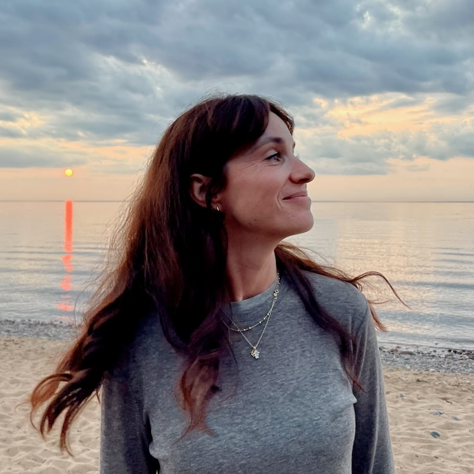

Monika Bermans
Jestem terapeutką Gestalt w trakcie szkolenia i artystką multidyscyplinarną mieszkającą w Barcelonie.
O Mnie

Moja droga była kształtowana przez kreatywność, mam wykształcenie z filologii włoskiej, kierowałam projektami artystycznymi i zajmowałam się designem, ale teraz skupiam się na terapii i rozwoju osobistym.
Kontynuując swoją edukację w Institut Gestalt w Barcelonie, z pasją tworzę bezpieczną, wspierającą przestrzeń, w której ludzie mogą eksplorować siebie i swoje emocje. Wierzę, że każdy może skorzystać z terapii, nie tylko ci, którzy zmagają się z poważnymi wyzwaniami.
Choć wciąż się uczę, moje podejście łączy moją artystyczną wrażliwość z głębokim zaangażowaniem w pomaganie innym. Wierzę, że zarówno sztuka, jak i terapia są potężnymi sposobami na połączenie się z samym sobą i opowiedzenie swojej historii. Jeśli szukasz kogoś, kto będzie Ci towarzyszyć w Twojej podróży ku samopoznaniu, jestem tu, aby wspierać Cię krok po kroku.
Jak Mogę Ci Pomóc
Współczesne życie może być przytłaczające. Otaczają nas niekończące się wybory, możliwości i skomplikowane relacje. Łatwo stracić z oczu to, co naprawdę ważne.
Wielu z nas czuje się zagubionych lub samotnych ze swoimi myślami, niepewnych, na czym skupić energię lub jak przejść przez życiowe zmiany. Często uciekamy od naszych emocji, bo wydają się zbyt trudne do przetworzenia, ale to tylko pogłębia nasze odłączenie.
W moim podejściu tworzę przestrzeń, w której możesz bezpiecznie połączyć się ze swoimi emocjami, pozwalając sobie je odczuwać i przetwarzać bez osądu.
Razem możemy eksplorować te wewnętrzne doświadczenia i znaleźć jasność oraz sens pośród życiowych zawiłości.
Skontaktuj się ze mną, aby uzyskać więcej informacji lub umówić się na konsultację. Jestem tu, aby pomóc Ci w Twojej emocjonalnej podróży.
Sesje terapeutyczne prowadzę w języku angielskim, hiszpańskim i polskim. Pierwsza 30-minutowa rozmowa wprowadzająca jest bezpłatna.